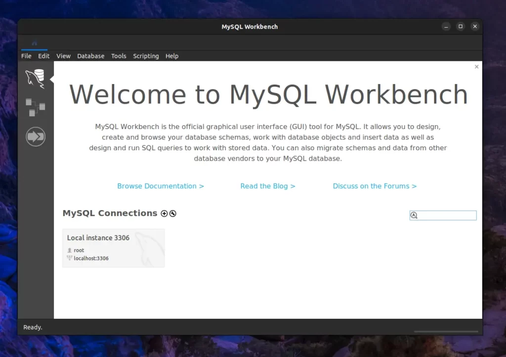
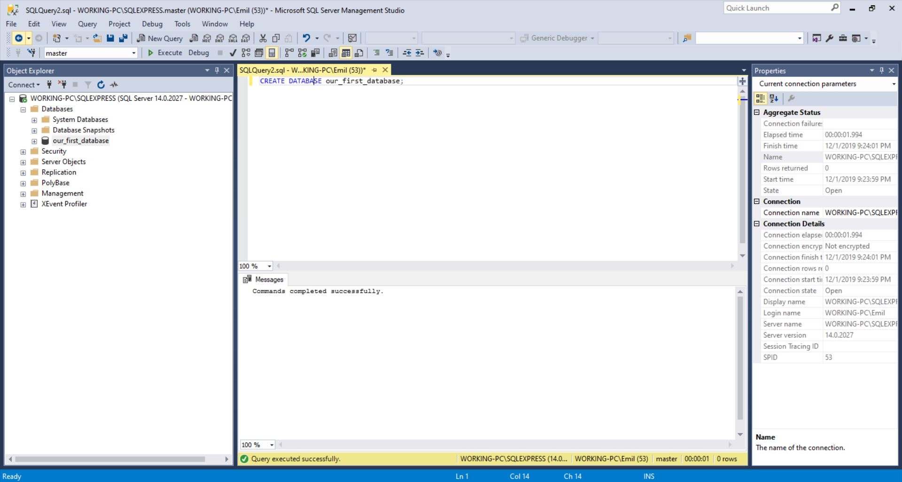

Learn how to create a new database in MySQL using the CREATE DATABASE statement.
The CREATE DATABASE statement is used to create a new database in MySQL.
A database acts as a container that stores multiple related tables, making it easier to organize and manage data.
CREATE DATABASE database_name;Replace database_name with the name of the database you want to create.

MySQL Workbench is the official graphical tool used to create databases, write SQL queries, and manage MySQL servers easily.
CREATE DATABASE CollegeDB;This command creates a new database named CollegeDB.

After executing the command successfully, the new database CollegeDB appears in the MySQL Workbench database list.
The CREATE DATABASE statement creates an empty database.
Once the database is created, you can add tables, insert data, and perform various SQL operations inside it.
Imagine you are creating a database for a college.
Before storing student records, teacher details, and course information, you must first create a database.
The CREATE DATABASE command creates the container where all these tables will be stored.
Which SQL command is used to create a new database?
The CREATE DATABASE statement is used to create a new database in MySQL.
Database names should be meaningful because they help developers easily identify the purpose of the database.
Q1. Which SQL statement is used to create a database?